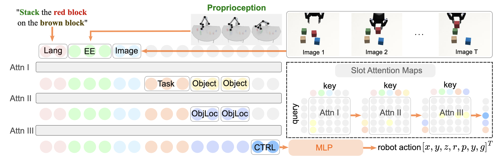

Sort Object
"Put the coke can in the bin"
Although imitation learning offers an appealing framework for policy learning, scaling it is challenging due to the lack of high-quality expert data. Previous works have addressed this by modifying model design and increasing state diversity to improve data quality, but these approaches often overlook the rich contextual information inherent in the data itself. In this paper, we propose an automated learning framework that leverages large language models (LLMs) and vision-language models (VLMs) to provide context-rich supervision for Modular Attention based imitation learning policies, denoted as AutoMA. Specifically, LLMs are used for hierarchical modular design, and VLMs provide supervision signals for the different modules. AutoMA thus leverages the capabilities of foundational models to inform the policy with rich context from the data. Experimentally, we demonstrate that AutoMA is scalable across a broad spectrum of tasks and significantly outperforms baseline models in six simulated and real-world manipulation tasks, achieving success rate improvements of up to 56%. Furthermore, we illustrate how AutoMA facilitates re-using the modules when transferring the policy to different robots with only 20% of the original data scale, significantly improving data efficiency.
This AutoMA framework bridges the gap between modular and end-to-end learning, enabling the reuse of functional building blocks. In summary, our contributions are as follows: (1) Leveraging Rich Context: Our approach leverages rich context by decomposing tasks into hierarchical modules and semantically extracting the underlying context for each module; (2) Improving Data Efficiency: AutoMA enhances data efficiency by enabling the reuse of functional building blocks when transferring tasks to different embodiments; (3) Empirical Evaluations: AutoMA demonstrates significant improvements, achieving up to 56% success rate improvements in complex manipulation tasks with distractors compared to baselines.
LLMs decompose high-level tasks, such as "stack the red block on the brown block" into modules and construct a hierarchy among them. AutoMA integrates this hierarchy using slot attention mechanisms for policy learning. For instance, the Task and Object only focus on Lang tokens in the first attention layer, the ObjLoc module attends to Image to localizing objects, and the CTRL module attends to EE, task, and ObjLoc to generate final robot actions.
For instance, in a stacking task, the high-level task is decomposed into several sub-tasks: (1) understanding the required action type, (2) identifying which object to manipulate, (3) locating the object in the image, and (4) generating the end-effector controls. As shown in the figure, these sub-tasks form a hierarchical structure
where Lang, Image, and EE are considered as input modules, Task, Object, ObjLoc, and CTRL are sub-task modules.
we evaluate the effectiveness of AutoMA across multiple manipulation tasks, each with distinct setups:
"Put the coke can in the bin"
"Sort the coke can"
"Put the coke into the bin"
"Put the bread in the bin"
"Sort the coke can"
"Pick the milk and put it in the bin"
"Stack the red block on the green block"
"Put the red block on the green block"
"Place red block over green block"
"Put the red block on the green block"
"Stack blue blcok on the green block"
"Place the brown block on the red block"
AutoMA embeds modular designs through an attention mechanism, which operates using three components: queries (Q), keys (K), and values (V). The query (Q) identifies the most relevant keys (K), producing scores that reflect their alignment. These scores are normalized and used to weight the corresponding values (V), thereby aggregating the most relevant information.
the task for the robot
**Task:**
You are a robot reflection model and your ask is to look at an image and
look at two state description of the scene and return the more accurate state.
For example, your command is given as 'stack the 1st block
on the 2nd block and stack the 3rd block on the 1st block.'.
Your input is an observation image of the scene, the two state description of the scene,
the output should be an state which describes more correctly of the scene.
the example
**Example Responses (you should follow the same JSON output format):**
Example 1.
"image_1"
{
"task": "stack the red block on the green block and stack the blue block on the red block.",
"input_state_1": ["red block on the green block", "green block on the table", "blue block on the table", "brown block on the table"],
"input_state_2": ["red block on the table", "green block on the table", "blue block on the table", "brown block on the table"],
"output_state": ["red block on the table", "blue block on the table", "green block on the table", "brown block on the table"],
"reason": "In the above image, all for blocks are not yet stacked and they are all on the table, so the input_state_2 is more accurate."
}